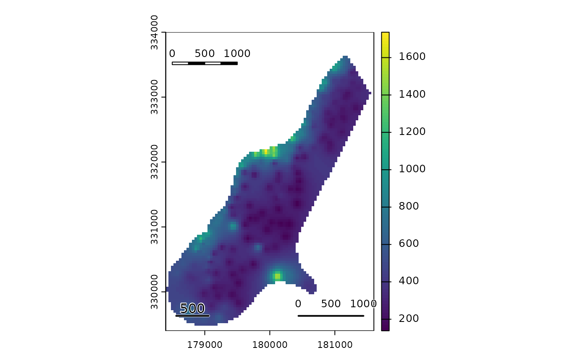
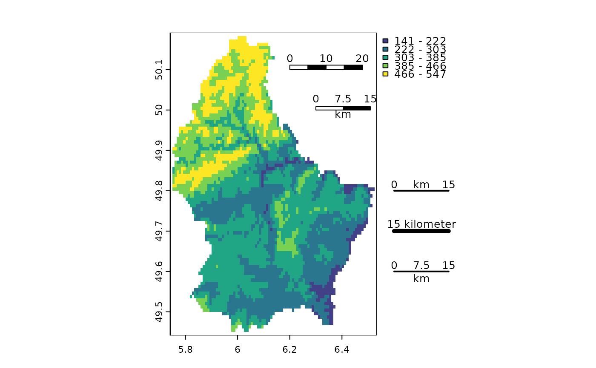

scale bar
sbar.RdAdd a scale bar to a map
Usage
sbar(d, xy=NULL, type="line", divs=2, below="", lonlat=NULL, labels,
adj=c(0.5, -1), lwd=2, xpd=TRUE, ticks=FALSE, scaleby=1, halo=TRUE, ...)Arguments
- d
numeric. Distance covered by the scale bar. For the scale bar, it should be in the units of the coordinates of the plot (map), and in km for angular (longitude/latitude) data; see argument
lonlat. It can also be missing- xy
numeric. x and y coordinate to place the scale bar. It can also be one of following character values: "bottomleft", "bottom", "bottomright", topleft", "top", "topright", "left", "right", or NULL
- type
for
sbar: "line" or "bar"- divs
number of divisions for a bar: 2 or 4
- below
character. Text to go below the scale bar (e.g., "kilometers")
- lonlat
logical or NULL. If logical,
TRUEindicates if the plot is using longitude/latitude coordinates. IfNULLthis is guessed from the plot's coordinates- labels
vector of three numbers to label the scale bar (beginning, midpoint, end)
- adj
adjustment for text placement
- lwd
line width for the "line" type of the scale bar
- xpd
logical. If
TRUE, the scale bar can be outside the plotting area- ticks
logical or numeric. If not
FALSE, tick marks are added to a "line" scale bar. The length of the tick marks can be specified- scaleby
numeric. If
labelsis not provided. The labels are divided by this number. For example, use 1000 to go from m to km- halo
logical. If
TRUEthe "line" type scale bar gets a white background- ...
graphical arguments to be passed to other methods
Examples
f <- system.file("ex/meuse.tif", package="terra")
r <- rast(f)
plot(r)
sbar()
sbar(1000, xy=c(178500, 333500), type="bar", divs=4, cex=.8)
sbar(1000, xy="bottomright", divs=3, cex=.8, ticks=TRUE)
north(d=250, c(178550, 332500))

f <- system.file("ex/elev.tif", package="terra")
r <- rast(f)
plot(r, type="interval")
sbar(20, c(6.2, 50.1), type="bar", cex=.8, divs=4)
sbar(15, c(6.3, 50), type="bar", below="km", label=c(0,7.5,15), cex=.8)
sbar(15, c(6.65, 49.8), cex=.8, label=c(0,"km",15))
north(type=2)
sbar(15, c(6.65, 49.7), cex=.8, label="15 kilometer", lwd=5)
sbar(15, c(6.65, 49.6), divs=4, cex=.8, below="km")
